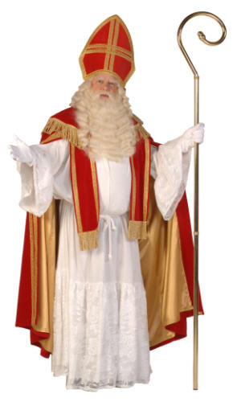

De stola is een lange smalle strook stof die om de hals wordt gedragen. Het synmboliseert naast de waardigheid van de bisschop ook het juk van zijn verantwoordelijkheid.
De albe wordt rond het middel van de Sint vastgebonden met een koord, de clingel. De clingel wijst de drager ervan op zelfbeheersing en kuisheid. Als Clingel kunt u het beste een oud gordijnkoord gebruiken.
Als ondergoed draagt de Sint een albe, een wit linnen onderkleed. De symbolische betekenis van dit gewaad is de reinheid en de puurheid. U kunt voor de albe een witte nachtjapon van alle franje ontdoen, of een oversized doktersjas achtersevoren aantrekken. Let erop dat dit onderkleed tot op de grond moet komen. Een Sinterklaas met hoog water is natuurlijk geen gezicht!
Naast de mijter is het Sinterklaassilhouet niet compleet zonder staf. De beschoppelijke kromstaf is het symbool van de kerkelijke macht van de bisschop. Het symboliseert de herdersstaf, die staat voor de pastorale zorg die de bisschop voor zijn gelovigen heeft. Bisscopsstaven zijn meestal gemaakt van verguld koper, maar voor gelegenheidssinterklazen voldoet ander materiaal ook prima. (een oude bezem bijvoorbeeld)
Het rode bovenkleed van Sinterklaas zoals wij dat kennen is een versimpelde vorm van de priesterlijke kazuifel. De officiële kazuifel is een rijkelijk versierd poncho-achtig gewaad. Moderne Sinterklazen dragen slechts een rode mantel tot aan de enkels. Gebruik voor het maken van de stola en de kazuifel donkerrood fluweel. Mocht dit te begrotelijk zijn, dan kunt u ook een gordijn van de rommelmarkt gebruiken.
Het meest in het oog springend attribuut
van Sinterklaas is de mijter. De oorsprong van dit eigenaardige hoofdeksel is onduidelijk. Waarschijnlijk is de mijter ontstaan uit een Frygische muts, een oosterse hoofdbedekking die oorspronkelijk alleen door de paus gedragen werd. Vanaf de twaalfde eeuw mochten kerkelijke hoogwaardigheidsbekleders als bisschoppen en abten zich ook met zo'n pauselijk hoofddeksel vertonen.
Een mijter bestaat uit twee spits toelopende vlakken die wel iets van een vijfhoek hebben. Ze zijn aan de onderkant met elkaar verbonden. Officiële mijters hebben aan de achterzijde nog twee flappen, maar die ontbreken bij buurmijters meesteal. Een mijter hoort voorzien te zijn van twee versierde banden in de vorm van een omgekeerde T.
In de praktijk wordt hier vaak van afgeweken, (De designer-piet heeft wel hele rare mijters ontworpen, zoals je in de mieterse mijtersmodeshow kan zien): zoals iedereen weet hoort een echte Sinterklaasmijter voorzien te zijn van een kruis van goudgalon!
van Sinterklaas is de mijter. De oorsprong van dit eigenaardige hoofdeksel is onduidelijk. Waarschijnlijk is de mijter ontstaan uit een Frygische muts, een oosterse hoofdbedekking die oorspronkelijk alleen door de paus gedragen werd. Vanaf de twaalfde eeuw mochten kerkelijke hoogwaardigheidsbekleders als bisschoppen en abten zich ook met zo'n pauselijk hoofddeksel vertonen.
Een mijter bestaat uit twee spits toelopende vlakken die wel iets van een vijfhoek hebben. Ze zijn aan de onderkant met elkaar verbonden. Officiële mijters hebben aan de achterzijde nog twee flappen, maar die ontbreken bij buurmijters meesteal. Een mijter hoort voorzien te zijn van twee versierde banden in de vorm van een omgekeerde T.
In de praktijk wordt hier vaak van afgeweken, (De designer-piet heeft wel hele rare mijters ontworpen, zoals je in de mieterse mijtersmodeshow kan zien): zoals iedereen weet hoort een echte Sinterklaasmijter voorzien te zijn van een kruis van goudgalon!